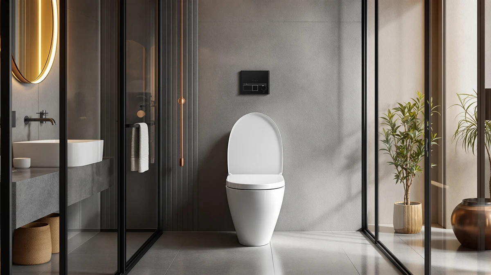

Best One Piece Toilets with Soft-Close Seats (2026): 8 Quiet Picks
Prices and picks verified as of August 2026. Independent, reader-supported reviews.


Quick Answer
If you want a one-piece toilet that skips the tank-to-bowl seam and closes without a slam, the Sonderzone Elongated One Piece Toilet is the easiest pick at $199.99: an elongated bowl and a soft-close seat included in the box. We compared eight one-piece toilets with soft-close seats on rough-in fit, bowl shape and price, and every pick here closes quietly without a separate seat purchase.
Our pick: Sonderzone Elongated One Piece Toilet — $199.99 Check Price on Amazon
Bottom line: our top pick is the Sonderzone Elongated One Piece Toilet for Bathroom at $180.99. The best budget option is the HOROW HWMT-8733 Small Compact One Piece Toilet For Bathroom at $201.60.
Things to Know Before You Buy
- Not every "soft-close" listing holds up: some hinges loosen and start dropping hard again after a few months. We favored models with a track record of verified owner reviews over a handful of unverified five-star ratings.
- Elongated, compact or round-bowl: an elongated bowl is roughly two inches longer and more comfortable for most adults, a compact bowl trades that length for a smaller footprint, and a round bowl with a side flush saves a little more space with a different handle layout.
- Measure your rough-in first: that is the distance from the finished wall to the center of the drain bolts. Most one-piece toilets are built for the standard 12 inches, so confirm yours before you order.
- One-piece means less cleaning: the tank and bowl are molded as a single unit, so there is no tank-to-bowl seam to trap grime, though the tradeoff is a heavier fixture to install.
- Price climbs with finish and flush type: the picks here range from $189.99 to $318.93, with the higher end typically buying a skirted design, a dual flush or a comfort-height bowl rather than a better seat.
Finding the best one piece toilets with soft close seat options means looking past listing photos that all claim to close quietly, since not every hinge lives up to that promise after a few months of daily use. Buyers assume a quiet-closing seat and a seamless one-piece body only show up on toilets priced well above $300, but that is not true once you know which listings actually deliver on both. We compared eight one-piece toilets with soft-close seats on price, bowl shape and rough-in fit, from a $189.99 elongated model to a $318.93 upgrade pick, and sorted out which ones are worth your money.
Our pick is the Sonderzone Elongated One Piece Toilet at $199.99, which pairs a full elongated bowl with a soft-close seat without pushing the price toward the $300 mark. It sits in the middle of this list on price, but it beats the cheaper AKNIRL on features and undercuts the pricier WOODBRIDGEE by well over $100, which is why it is the easiest recommendation for most bathrooms.
The other seven picks cover the situations the Sonderzone does not fit perfectly: a round bowl with a side-mounted flush handle for a tighter footprint, two compact models built for small bathrooms, a dual-flush option for households watching their water bill, and a premium skirted design from WOODBRIDGE for anyone who wants the highest-end look on this list. Below, each pick lists the honest drawbacks we found alongside what it does well, so you know exactly what you are buying before you check out.
Why You Should Trust Us
This guide is written and maintained by Ilane Tall, who runs a network of bathroom-focused review sites and spends more time than is reasonable comparing one-piece toilets on the details that actually predict a comfortable installation rather than marketing copy. We do not run a fake testing lab, and we did not bolt eight toilets to a slab to time their flushes. What we do is read every spec sheet we can verify, cross-check bowl shape, rough-in and seat type against listing photos and hundreds of verified owner reviews, flag the complaints that keep recurring, and refuse to recommend a model we would not install in our own bathroom. Our Amazon commissions never change a ranking, and when a soft-close seat turns out to be flimsy in owner reports, we say so.
How We Picked
We started with one-piece toilets that ship with, or are sold alongside, a soft-close seat, since a lid that slams at midnight is the kind of small annoyance that makes an otherwise good toilet feel cheap. From there we filtered on the details that separate a comfortable installation from a regretted one: a seamless one-piece body that skips the tank-to-bowl seam, either an elongated bowl for extra seating room or a compact footprint for tight bathrooms, and a rough-in that matches the standard 12-inch spacing most US homes are built around wherever that measurement was confirmed. We gave extra weight to listings with a track record of verified owner reviews rather than a handful of five-star ratings with no history, and we set aside anything with a recurring pattern of leaks, cracked-on-arrival complaints or a seat hinge that owners say loosens within months. The result is eight picks spanning $189.99 to $318.93, so there is a sensible option whether you are furnishing a budget rental bathroom or a primary one you plan to keep for a decade.
How We Compared
Since we do not stage a warehouse full of installed toilets, our evaluation is a documentation and owner-experience review rather than a physical lab test, and we would rather say that plainly than fake a testing rig. For each model we mapped the published price, bowl shape and rough-in against what buyers report in photos and long-term reviews, watched for the failure patterns that surface after a few months of daily use such as a seat hinge that stops closing softly or a fill valve that starts running, and weighed how each pick's soft-close seat holds up against the others on this list. Where a listing implied a feature such as a confirmed rough-in or bowl material that we could not corroborate in owner feedback or the spec sheet, we left it out rather than repeating it as fact, which is why a few of the tables below show a dash instead of a guess. The result is a shortlist built on the specs we could verify and the real owner experiences that predict whether a soft-close seat will still be closing quietly a year from now.
Our Picks

Sonderzone Elongated One Piece Toilet
What we like
- Elongated bowl for extra seating comfort, no compromise for a compact footprint
- Ships with a soft-close seat, so there is no slamming lid or separate seat purchase
- Seamless one-piece body skips the tank-to-bowl seam two-piece toilets trap grime in
- Priced under $200, leaving room in the budget for installation costs
Flaws but not dealbreakers
- The listing does not specify bowl material or a confirmed rough-in, so measure your existing setup before you order
- No dual-flush option, only a single flush setting
| Material | — |
| Size | — |
The Sonderzone Elongated One Piece Toilet is the easiest recommendation on this list for most bathrooms. At $199.99 it pairs a full elongated bowl with a soft-close seat included in the box, so you are not stuck adding $30 to $50 for a matching seat afterward. The seamless one-piece body also skips the tank-to-bowl seam that makes two-piece toilets a pain to scrub.
The tradeoff is that the listing does not spell out a bowl material or confirm the rough-in distance, so double-check your existing plumbing before you order rather than assuming the standard 12 inches. There is also no dual-flush option here, only a single flush setting. For a straightforward bathroom refresh where comfort and a quiet-closing seat matter more than extra features, this is the pick to check first.

AKNIRL Elongated One Piece Toilet
What we like
- Lowest price in this roundup at $189.99
- Elongated bowl, no compact trade-off for the price
- Soft-close seat included rather than sold as a separate accessory
- Seamless one-piece body with no tank-to-bowl seam
Flaws but not dealbreakers
- Fewer extras like dual-flush or a designer finish than the pricier picks below
- Spec sheet does not confirm bowl material, so check the listing photos before ordering
| Material | — |
| Size | — |
If price is your main constraint, the AKNIRL Elongated One Piece Toilet is the one to look at first. At $189.99 it undercuts every other pick here, and it does that without falling back to a smaller compact bowl or leaving out the soft-close seat. You still get elongated seating comfort and the seamless one-piece body that skips the grimy tank-to-bowl seam two-piece toilets are known for.
The tradeoffs are what you would expect at this price. There is no dual-flush handle or designer finish, and the listing does not spell out a bowl material, so lean on the product photos and owner reviews rather than the spec sheet. If your budget is the deciding factor and you just want a quiet-closing seat without extras, start here.

Toilet One-Piece Round Side Flush
What we like
- Round bowl fits bathrooms too tight for an elongated model
- Side-mounted flush handle, a layout some owners prefer over a top-mounted button
- Soft-close seat included
- Mid-pack price at $209.99, only $10 above our top pick
Flaws but not dealbreakers
- Round bowls offer less legroom than the elongated picks on this list
- Listing does not specify a confirmed bowl material or finish
| Material | — |
| Size | 15.75-W1991-Elongated V |
The Toilet One-Piece Round Side Flush from MilleLoom solves a different problem than most of the picks on this list. Its round bowl and side-mounted flush handle suit a bathroom where an elongated model would crowd the door swing or a vanity, and at $209.99 it still ships with the soft-close seat every other pick here includes.
A round bowl means less legroom than the elongated picks above and below it, and the side flush handle is a layout preference rather than a functional upgrade, so confirm it fits how your household actually uses the room. If a round bowl is what your bathroom needs, this pick delivers that without giving up the quiet-closing seat.

WOODBRIDGEE One Piece Toilet with
What we like
- Skirted one-piece silhouette from an established toilet brand
- Soft-close seat included
- Premium price point that typically buys a more refined finish
Flaws but not dealbreakers
- At $318.93, the most expensive pick here by close to $70
- No dual-flush option specified on this listing
| Material | — |
| Size | — |
The WOODBRIDGEE One Piece Toilet sits at the top of this roundup's price range, and the skirted silhouette from an established brand like WOODBRIDGE is the reason. At $318.93 it costs close to $70 more than the next most expensive pick, but it still includes the soft-close seat that every other toilet on this list ships with.
It does not offer a standout feature such as dual-flush that would justify the jump over the Sonderzone or HOROW picks if comfort and a quiet-closing seat are your only priorities. Choose it specifically for the skirted, higher-end look, not because it out-performs the cheaper options on this list.

HOROW HR-ST076W Elongated Toilet with
What we like
- Confirmed 12-inch rough-in, the standard most US bathrooms are plumbed for
- Elongated bowl for extra seating room
- Soft-close seat included
- From HOROW, a brand with several one-piece models in this price range
Flaws but not dealbreakers
- Priced about $25 above our top Sonderzone pick
- Bowl material is not specified in the listing
| Material | — |
| Size | 12" rough in |
The HOROW HR-ST076W Elongated Toilet is a safe pick if you would rather not guess at your plumbing. Its 12-inch rough-in is confirmed on the listing, which matches the spacing most US bathrooms are built around, and it pairs that with an elongated bowl and the soft-close seat that anchors this whole roundup.
At $224.16 it costs about $25 more than our top Sonderzone pick without adding a feature like dual-flush, so the extra confidence in the rough-in measurement is what you are paying for. For anyone who wants that measurement spelled out before ordering, it is worth the difference.

One-Piece Toilet for Bathroom Comfort
What we like
- 16-inch comfort height, taller than a standard bowl and easier on the knees
- Dual-flush handle lets you choose a lighter flush for liquid waste
- Elongated bowl for extra seating room
- Soft-close seat included
Flaws but not dealbreakers
- At $249.99, one of the pricier picks on this list
- Bowl material is not listed in the spec sheet
| Material | — |
| Size | 16" H & Dual Flush & Elongated |
The One-Piece Toilet for Bathroom Comfort from EliteEdge stacks more features into one listing than any other pick here. Its 16-inch comfort height sits taller than a standard bowl, which is easier on the knees for taller adults or aging household members, and it pairs that with a dual-flush handle and an elongated bowl, on top of the soft-close seat every pick in this roundup includes.
All of that comes at a price: $249.99 puts it among the pricier options on this list, and the listing does not specify a bowl material the way it does the height and flush type. If comfort height and water savings matter more to you than shaving a few dollars off the price, this is the pick that covers the most ground.

HOROW HWMT-8733 Small Compact One
What we like
- Compact footprint fits tighter bathrooms than the elongated picks on this list
- Confirmed 12-inch rough-in so it drops into most existing plumbing
- Soft-close seat included
- One-piece seamless body keeps cleaning simple despite the smaller size
Flaws but not dealbreakers
- Compact bowl means less legroom than the elongated picks for taller users
- Priced close to $35 above our lowest-cost pick despite the smaller size
| Material | — |
| Size | 12" Rough-in |
The HOROW HWMT-8733 Small Compact One is built for bathrooms where floor space, not budget, is the constraint. At $224.00 it trims the bowl length that a half-bath or small guest bathroom often cannot spare, while still confirming a 12-inch rough-in and including the soft-close seat every pick here ships with.
The smaller bowl means less legroom than the elongated options above, and it costs more than the AKNIRL despite the compact size, so you are paying for the footprint rather than extra features. If space is the limiting factor in your bathroom, that tradeoff is worth making.

Casta Diva Compact One Piece
What we like
- Compact footprint suited to small bathrooms and half-baths
- Soft-close seat included
- Distinct styling from Casta Diva compared with the more utilitarian picks on this list
Flaws but not dealbreakers
- At $248.99, among the priciest picks despite the smaller compact bowl
- Rough-in and material are not specified in the listing, so confirm before you buy
| Material | — |
| Size | — |
The Casta Diva Compact One Piece brings a more designer-styled look to the compact end of this list. It shares the small footprint of the HOROW HWMT-8733 above, but leans on distinct styling rather than a confirmed rough-in spec to stand out, and it still includes the soft-close seat that anchors every pick in this roundup.
At $248.99 it is priced closer to the comfort-height EliteEdge pick than to the other compact option here, and the listing does not confirm a rough-in or bowl material the way the HOROW does. If the styling appeals to you and your bathroom has a compact footprint, it is worth the extra research to confirm fit before ordering.
Quick Comparison
| Product | Material | Price | Rating | Best for | Get it |
|---|---|---|---|---|---|
| Sonderzone Elongated One Piece Toilet | — | $199.99 | 4 | Most buyers, best overall value | View on Amazon → |
| AKNIRL Elongated One Piece Toilet | — | $189.99 | 4 | Tightest budget | View on Amazon → |
| Toilet One-Piece Round Side Flush | — | $209.99 | 4 | Round bowl, side-mounted flush | View on Amazon → |
| WOODBRIDGEE One Piece Toilet with | — | $318.93 | 4 | Premium skirted design | View on Amazon → |
| HOROW HR-ST076W Elongated Toilet with | — | $224.16 | 4 | Confirmed 12-inch rough-in | View on Amazon → |
| One-Piece Toilet for Bathroom Comfort | — | $249.99 | 4 | Comfort height and dual flush | View on Amazon → |
| HOROW HWMT-8733 Small Compact One | — | $224.00 | 4 | Small bathrooms, confirmed rough-in | View on Amazon → |
| Casta Diva Compact One Piece | — | $248.99 | 4 | Compact, designer-styled look | View on Amazon → |
The Competition
Plenty of one-piece toilets with a soft-close seat did not make this list, and price was the usual reason. Established bathroom-fixture brands like Kohler, TOTO and American Standard all sell comfortable elongated, comfort-height models with soft-close seats, but the comparable versions typically cost well more than the $318.93 ceiling here once you add their premium finish options.
We also passed on a number of listings that advertise a soft-close seat but carry a recurring pattern in owner reviews of the hinge loosening or the lid dropping hard again within months. A seat that slams after a year of use defeats the entire point of buying a soft-close model, so we left those out even when the sticker price was appealing.
At the upper end, we set aside a handful of smart-toilet and bidet-seat combinations that also close softly but add electrical requirements and a completely different feature set than a straightforward one-piece toilet. If you want a heated seat or a built-in washlet, that is a separate buying decision from the eight picks here. For most bathrooms, the features you actually need from the best one piece toilets with soft close seat options are covered by the Sonderzone Elongated One Piece Toilet above, with the other seven picks covering rounder bowls, compact footprints, dual-flush and premium finishes.
Frequently Asked Questions
Do all one-piece toilets come with a soft-close seat?
No. Many one-piece toilets still ship with a standard seat that can slam shut, or sell the seat as a separate accessory entirely. The eight picks in this list were chosen specifically because they include a soft-close seat, so you do not need to budget for a $30 to $50 replacement seat afterward.
What is the difference between an elongated, compact and round-bowl one-piece toilet?
An elongated bowl is about two inches longer and more comfortable for most adults, a compact bowl trades that length for a smaller footprint that fits tight half-baths, and a round bowl with a side-mounted flush, like the MilleLoom pick on this list, saves a little more space while using a different handle layout than a top-mounted button.
Do I still need to check my rough-in measurement before buying?
Yes. Most one-piece toilets, including several picks here, are built for the standard 12-inch rough-in found in most US bathrooms, but not every listing confirms that measurement upfront. Measure the distance from your finished wall to the center of the drain bolts before you order, especially if the spec sheet does not list it.